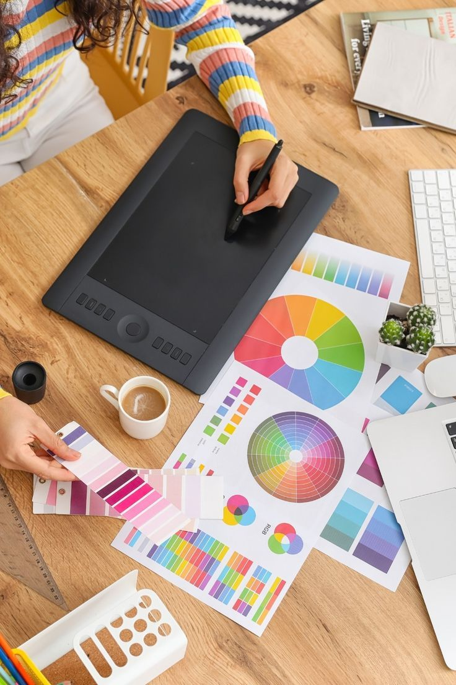
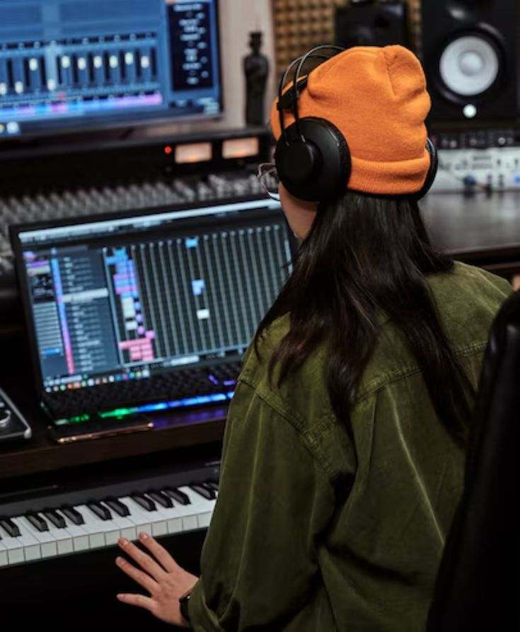
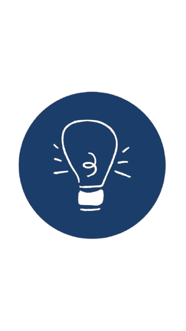

Ingenieria Multimedia
Es una rama de la ingeniería que se especializa en la creación, administración y distribución de contenido multimedia interactivo, combinando principios de ingeniería de software, diseño y comunicación.
en movimiento
Que es la ingenieria
La ingenieria aplica conocimientos cientificos y matematicos para resolver problemas practicos. Convierte las ideas en soluciones tangibles que transforman la vida cotidiana.
Que hace un ingeniero multimedia
Su trabajo combina creatividad, tecnologia y comunicacion para crear experiencias digitales interactivas. Haz clic en cada tarjeta para cambiar la imagen activa y pasa el cursor para ampliarla.


Diseno y produccion multimedia
Crear graficos, animaciones, videos y audio para proyectos digitales.



Desarrollo multimedia
Programar aplicaciones multimedia interactivas utilizando lenguajes como HTML, CSS y JavaScript.
Areas de desempeno
Un ingeniero multimedia puede participar en distintos sectores donde se mezclan diseno, software, comunicacion, contenido digital e interaccion.
Perfil del ingeniero multimedia
El perfil une sensibilidad creativa, pensamiento tecnico y capacidad para comunicar ideas mediante experiencias digitales.

Perfil del aspirante
Curiosidad por la tecnologia.
Interes en el diseno y la comunicacion visual.
Gusto por videojuegos, produccion audiovisual y contenido digital.
Perfil del egresado
Lidera y desarrolla proyectos multimedia.
Crea soluciones innovadoras que integran diseno, tecnologia y comunicacion.
Trabaja con diseno, animacion, edicion audiovisual y programacion.
Habilidades y competencias
La ingenieria multimedia exige una combinacion de dominio tecnico, criterio visual, comunicacion y capacidad para trabajar en proyectos digitales.
Habilidades tecnicas
- Programacion: HTML, CSS, JavaScript, Python.
- Diseno grafico: Photoshop, Illustrator, Figma.
- Animacion 2D/3D: After Effects, Blender, Autodesk Maya.
- Edicion de video y audio: Premiere Pro, Final Cut Pro, Audacity.
- Gestion de proyectos con metodologias agiles.
Habilidades creativas y blandas
- Creatividad para disenar contenidos atractivos.
- Comunicacion para transmitir ideas a equipos y clientes.
- Trabajo en equipo con disenadores, programadores y comunicadores.
- Resolucion de problemas tecnicos y creativos.
Inteligencia artificial
La automatizacion de tareas repetitivas permite enfocar el trabajo en creatividad e innovacion estrategica.
IA generativa
La generacion automatica de imagenes, video y musica redefine los procesos creativos multimedia.
Tendencias en Colombia
El crecimiento TIC impulsa contenidos interactivos, realidad aumentada y desarrollo web.
Realidad extendida
VR, AR y realidad mixta aumentan la demanda de experiencias inmersivas disenadas por ingenieros multimedia.